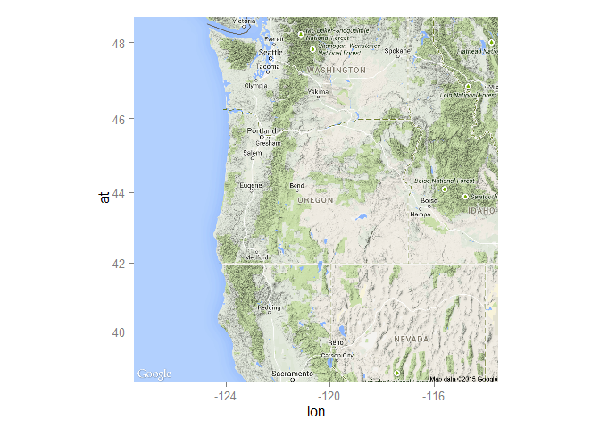
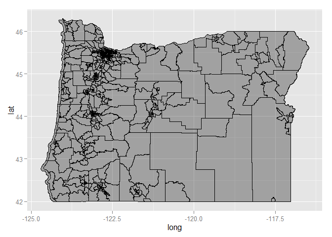
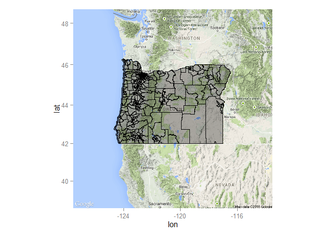

For any cemetery project, it may be useful to have on hand a map of the area. We can easily produce a basemap onto which we can later plot spatial data on a cemetery (e.g., boundaries, locations of plots). R’s ability to handle and visualize spatial data have grown rapidly over the years. Below, I present an incredibly simple way to produce a map layer in R. For more, see Roger Bivand and colleague’s Applied Spatial Analysis with R (2013).
While the Base R installation comes with some capabilities for handling spatial data, users continue contributing to an ever-growing list of packages for handling general, and specific, spatial problems. In fact, many of these packages can be installed together from one of the Comprehensive R Archive Network’s (CRAN) “task views,” which are groups of packages related to specific analytical problems or disciplines. For example, one may want to check out the Spatial and SpatioTemporal task views.
# Load required libraries
spatpack <- c("ggplot2", "ggmap", "ggthemr", "rgdal", "scales", "dplyr", "Cairo", "shiny", "ggvis", "maptools", "sp", "spatial")
sapply(spatpack, require, character.only = TRUE)
# Allow use of the `gpclib` package, if installed
gpclibPermit()Now that that those packages have been loaded, I’ll use ggmap to get our map layer.
# The get_map function retrieves the map, which is passed to ggmap
or.map <- get_map(location = "Oregon", source = "google", maptype = "terrain", zoom = 6)
ggmap(or.map)
This is great, but for a cemetery project, there’s a good chance one will want to plot a shapefile onto a basemap layer. Just as an example, we could plot Oregon census tracts onto our basemap above. First one would need to get the shapefile data provided by the U.S. Census Bureau. After that, we can read the shapefile into R using the readOGR() function from the rgdal package.
# File location ("dsn") and name ("layer") must be specified.
orCens <- readOGR(dsn = "C:/Users/Trey/Documents/R/spatial/tl_2014_41_tract", layer = "tl_2014_41_tract")## OGR data source with driver: ESRI Shapefile
## Source: "C:/Users/Trey/Documents/R/spatial/tl_2014_41_tract", layer: "tl_2014_41_tract"
## with 834 features and 12 fields
## Feature type: wkbPolygon with 2 dimensions# View the projection information
proj4string(orCens)## [1] "+proj=longlat +datum=NAD83 +no_defs +ellps=GRS80 +towgs84=0,0,0"Massage the shapefile some, then transform into a format to be read by ggplot2 and ggmap.
orCens.wsg84 <- spTransform(orCens, CRS("+proj=longlat +ellps=WGS84 +datum=WGS84 +no_defs"))
data <- fortify(orCens.wsg84)## Regions defined for each PolygonsFirst, let’s map this using ggplot2.
ggplot() + geom_polygon(aes(x = long, y = lat, group = group), data = data, color = "black", fill = "black", alpha = 0.3, size = 0.4)
Looks good, but I really want to see this shape layered on top of my basemap. Time for that.
ggmap(or.map) + geom_polygon(aes(x = long, y = lat, group = group), data = data, color = "black", fill = "black", alpha = 0.3, size = 0.4)
It didn’t take a whole lot of code to produce this post. Nice!